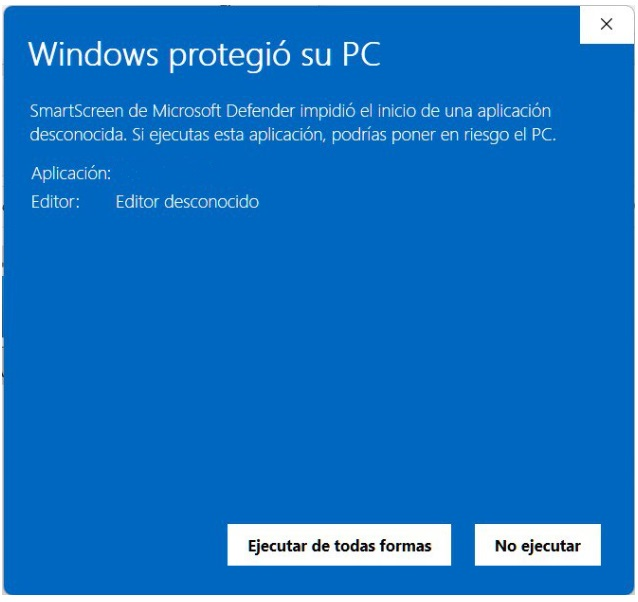

Despliegue de la aplicación
La arquitectura de ALMENDRA ha sido concebida bajo el paradigma de un sistema autónomo y local, minimizando las dependencias críticas con el sistema anfitrión. A continuación, se detallan las especificaciones técnicas necesarias para garantizar la estabilidad operativa del software y el procedimiento secuencial para su puesta en marcha en el puesto de trabajo del docente.
Requisitos técnicos del sistema
Al tratarse de una aplicación autoejecutable que integra de forma nativa sus propios motores de procesamiento, el software no requiere la preinstalación de entornos de ejecución complejos o servidores de bases de datos de terceros. No obstante, el hardware anfitrión debe verificar las siguientes especificaciones mínimas y recomendadas:
- Sistema Operativo: Microsoft Windows 10 o Windows 11 en sus arquitecturas de 64 bits. (Nota técnica: Los entornos macOS y GNU/Linux quedan excluidos de esta distribución, requiriendo compilaciones específicas del código fuente).
- Unidad Central de Procesamiento (CPU): Arquitectura x86-64 con procesadores Intel Core i3, AMD Ryzen 3 o equivalentes y superiores.
- Memoria de Acceso Aleatorio (RAM): Mínimo de 4 GB. Se recomienda una asignación estandarizada de 8 GB de RAM para optimizar la fluidez del motor analítico durante el procesamiento matricial de grupos-aula masivos y la renderización concurrente de la documentación curricular.
- Almacenamiento Físico: Disponibilidad mínima de 500 MB de espacio libre en disco, destinados al binario ejecutable, al motor relacional local y al almacenamiento persistente de las plantillas y los informes diagnósticos generados.
- Conectividad: Conexión a Internet activa y obligatoria. A pesar de que la base de datos curricular opera de forma local para garantizar la latencia cero en las consultas, el motor analítico híbrido precisa de salida a la red para la comunicación asíncrona mediante llamadas HTTPS cifradas con la API de Inteligencia Artificial de Google (Gemini).
- Software de Terceros: Procesador de textos con soporte para el estándar abierto u OpenXML (Microsoft Word, LibreOffice Writer o Google Docs) para la visualización e interacción con las unidades didácticas persistidas.
Visores de documentos portables (.pdf) y entornos de renderizado para archivos estructurados en Markdown (.md).
Protocolo de ejecución e ingesta en modo portable
El despliegue de ALMENDRA se fundamenta en un modelo de distribución portable y autoejecutable. Este enfoque arquitectónico elimina la necesidad de rutinas de instalación tradicionales que modifiquen el registro del sistema operativo, permitiendo al docente ejecutar la aplicación sin requerir privilegios elevados de administración de sistemas en los equipos del centro educativo.
El procedimiento formal de puesta en marcha consta de las siguientes fases secuenciales:
-
Fase 1: Descompresión e Inserción en Directorio de Escritura
El docente descarga el paquete distribuido en formato autoejectuable .exe. Se debe garantizar obligatoriamente que el directorio de destino pertenezca al espacio de usuario (ej., Escritorio o Documentos).
Durante su primera rutina de arranque, el software ejecuta de manera automatizada un protocolo de inicialización del entorno que crea dos carpetas raíz indispensables para su funcionamiento:
Carpeta /data: Espacio estanco destinado a alojar la base de datos relacional local (curriculo.db) junto con toda la persistencia de información curricular, configuraciones globales e históricos normalizados.
Carpeta /output: Repositorio local parametrizado donde el sistema exportará y guardará de forma organizada todos los materiales pedagógicos y analíticos resultantes de la interacción del docente (unidades didácticas, situaciones de aprendizaje e informes diagnósticos integrados).
⚠️ Restricción de Seguridad del Sistema: Debe evitarse el despliegue del software en rutas del sistema restringidas como C:\Program Files (Archivos de Programa). Al carecer de instalador con privilegios, el sistema operativo denegaría los permisos de escritura necesarios para que ALMENDRA actualice su base de datos local e implemente la persistencia del archivo de configuración global settings.json.
-
Fase 2: Ejecución y control del sistema operativo
Una vez direccionada la carpeta estanca, el usuario debe localizar el binario principal indexado como Almendra.exe, ejecutando el inicio mediante doble clic.
En caso de que los subsistemas de protección del sistema operativo (tales como Windows Defender o SmartScreen) intercepten el arranque mostrando una alerta de seguridad por editor comercial no verificado, el docente deberá acceder a la opción "Más información" y validar la instrucción "Ejecutar de todas formas", comportamiento habitual en el software de desarrollo educativo independiente.
